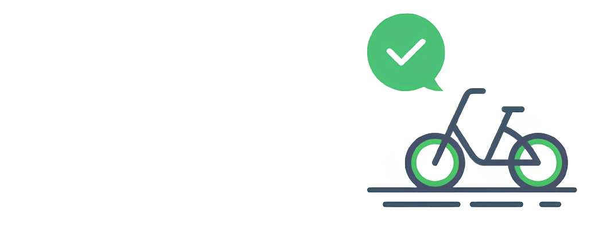
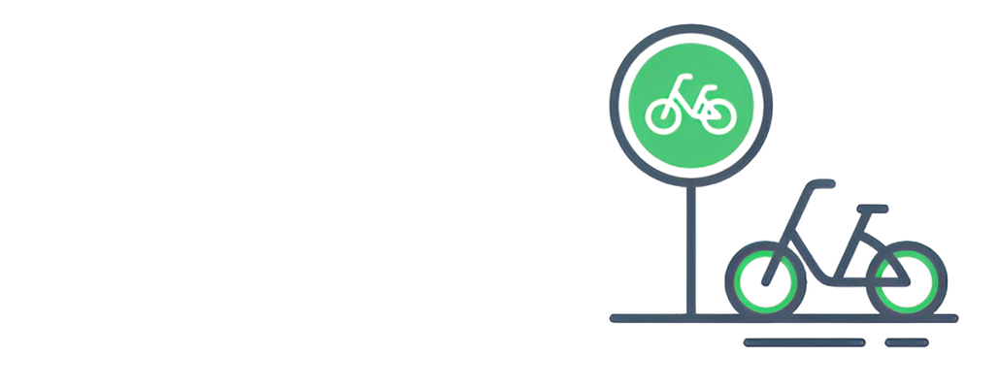
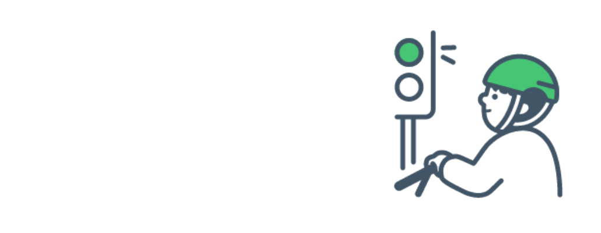
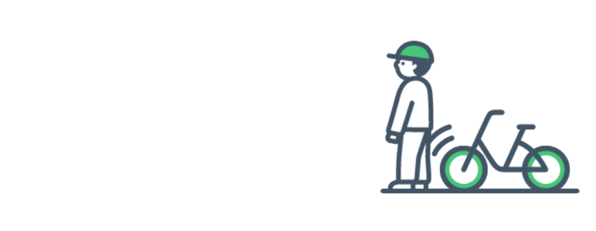

1 / 7 출발 전 점검 이용 전 브레이크,타이어,체인,안장 조임을 꼭 확인하세요  안전모 착용 안전한 주행을 위해 주행시 안전모를 착용하세요. 음주 운전 금지 자전거도 차와 같이 교통법규를 지켜야 합니다. 음주 후 이용시 도로교통법에 따라 처벌받습니다. 자전거도로 이용 자전거 도로를 이용하고,없는 경우 차도 우측 가장자리에 붙어서 통행합니다.이때 2대 이상 나란히 통행하지 않습니다.  횡단보도 이용시 횡단보도에서는 자전거를 끌고 보행해야 합니다.  보행자 배려 보행자의 통행에 방해가 될 경우 일시정지하고, 보행자 보호를 위해 과속하지 않습니다.  주행중 기타행위 금지 주행시 핸들을 놓거나 이어폰,핸드폰을 사용하지 않습니다. ◀ ▶ 1 / 7